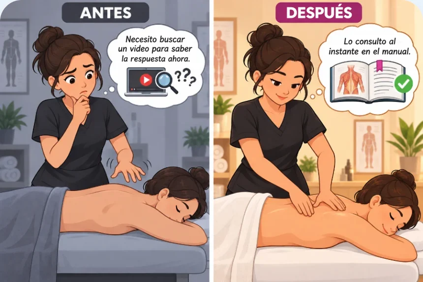
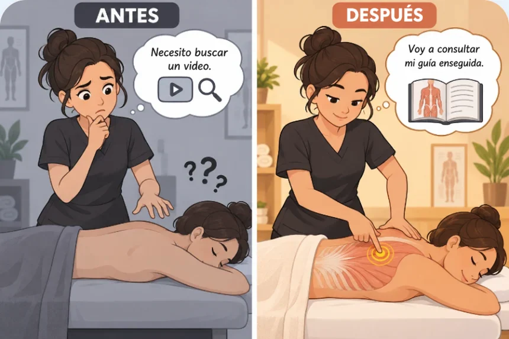
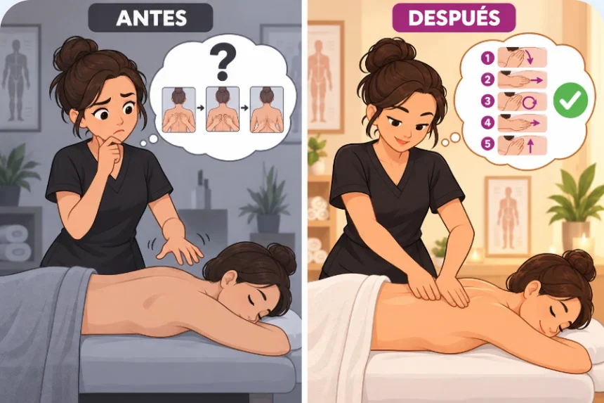
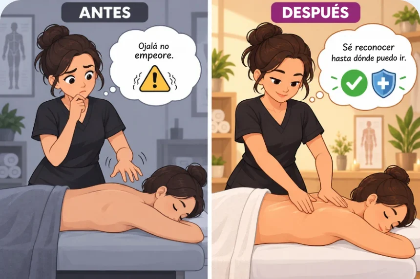

Más de 70 maniobras para tratar distintas regiones del cuerpo. Para cada una: dónde duele, dónde tocar, cómo tocar, qué presión usar y por cuánto tiempo.

Aprende dónde tocar, cómo tocar, qué presión y qué dirección seguir para tratar todo tipo de dolores con este Manual Ilustrado y logra resultados inmediatos

Más de 70 maniobras para tratar distintas regiones del cuerpo. Para cada una: dónde duele, dónde tocar, cómo tocar, qué presión usar y por cuánto tiempo.

No importa dónde esté el dolor, vas a saber resolverlo. Vas directo a la región que necesitas, de la cabeza a los pies, sin buscar videos guardados en el celular, capturas de pantalla ni notas sueltas.

Método validado, que uso desde hace años para enseñar a mis alumnas. Solo tienes que seguir el orden, sin detenerte en medio de la sesión preguntándote qué hacer.

Alertas de seguridad. El manual muestra cuándo NO dar masaje: inflamación, sospecha de fractura, señales de trombosis y otras situaciones que piden más cuidado, para que no te quedes con la duda de si puedes tocar ahí.
Mira la maniobra mientras se hace antes de aplicarla en tu clienta, sin quedarte con la duda de si entendiste bien solo con la ilustración.

Me mandas tu duda directo por WhatsApp y recibes respuesta en el momento. Sea sábado, domingo o feriado.

Aprende una técnica milenaria que alivia dolores en otras partes del cuerpo a través de los pies. Un mapa ilustrado de esos puntos, sin pagar nada más.

Las principales regiones linfáticas y la dirección de cada movimiento, para que lo apliques sin tener que adivinar hacia qué lado debe ir.

Conoce los 18 puntos sensibles y ten una guía visual para una atención más segura, humanizada y efectiva.
Porque esta condición, con todos los bonos incluidos, no es para siempre.

¡Asegura tu manual hoy y recíbelo en tu correo electrónico en pocos minutos!

Fisioterapeuta y fundadora de TopCorpus
Estoy casada, soy mamá de dos niñas, trabajo desde hace 20 años en la terapia del toque y me convertí en una de las mayores referentes de Brasil en esta especialidad.
Fundé la Escuela TopCorpus, donde ya ayudé a más de 60.000 alumnas en 60 países a pasar de cero a la profesionalización en el toque terapéutico.
Este manual reúne 20 años de mi práctica, listos para que los apliques con seguridad desde la primera técnica.
Aprende de quien vive esta profesión desde hace 20 años

Pero cuando llega un caso nuevo, todavía te quedan dudas. En el manual encuentras todas las maniobras organizadas por zonas, para consultarlas en cualquier momento.

Y todavía te pones nerviosa cuando la clienta te muestra un dolor nuevo. Aquí sabrás qué hacer antes de poner las manos, sin tener que memorizar nombres de músculos.
Tu esposo que llega con dolor de espalda, tu mamá con las piernas adoloridas… Aprende cómo ayudarlos y en qué casos es mejor no tocar, sin riesgo de empeorar su dolor.
No. Se hizo tanto para quien ya atiende como para quien está empezando ahora, con lenguaje directo y sin términos técnicos complicados.
Sí. Puedes acceder directo desde el celular, sin instalar nada.
El Manual Ilustrado para Aliviar el Dolor con Masaje se enviará a tu correo electrónico apenas se complete tu compra.
No. Todas las maniobras usan solo tus manos.
Claro que sí. El manual se hizo principalmente para eso.
Son situaciones que piden más cuidado, y el Manual muestra justamente eso: las alertas y los cuidados específicos de cada región, incluido cuándo conviene tener más atención. Te da más claridad en esos casos, pero no reemplaza una evaluación médica o fisioterapéutica cuando sea necesaria.
Es una de las dudas que el manual resuelve de forma directa. Cada región tiene una sección de alertas con las señales que indican que ese dolor puede no ser solo tensión muscular, para que sepas cuándo seguir con el masaje y cuándo es mejor derivar a un profesional de la salud.
Sí. En cada región del cuerpo, además de mostrar dónde y cómo tocar, el Manual trae las señales de atención: inflamación, sospecha de fractura, señales de trombosis y otras situaciones en las que no se debe dar masaje directamente ahí.